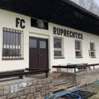
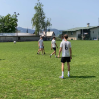
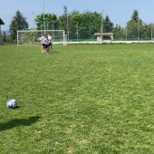

O mně
Jmenuji se Filip Chabera a mojí vášní je fotbal, kterému se věnuji přes 10 let. Minulý rok jsem úspěšně absolvoval trenérský kurz a nyní se zaměřuji na individuální tréninky fotbalistů do 17 let.
Co trénink zahrnuje?
Galerie fotekHráč přijde na hřiště s vlastními kopačkami a oblečením, trénink probíhá vždy hodinu, kde se zaměřuji na jeho slabé stránky, které je potřeba vylepšit. Celý trénink probíhá v přátelském duchu, rozcvička před i po tréninku. K dispozici jsou také šatny a sprchy, které jsou zahrnuty v ceně.



Kde se trénuje?
Trénink probíhá na hřišti v Ruprechticích, k dispozici je vždy 1/2 hřiště, při špatné viditelnosti je k dispozici osvětlení
Adresa: Staškova 297/13, Ruprechtice, 460 14 Liberec
Ceník
- Půjčení šaten 20Kč
- Tejpy 110Kč/ks
- Klubový vak Ruprechtic 200Kč
- Děti od 5-13 let 250Kč/hod
- Děti od 14-17 let 300Kč/hod
- Půjčení kopaček 100Kč/trénink